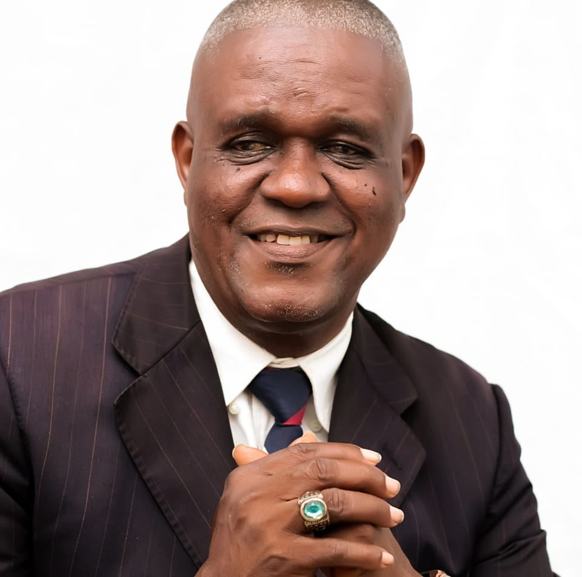

Our Stand As a Body of Christ
Influence Of Christ Gospel Mission is a bible based church, that builds it's principles on the word of God. We represent Christ, that He died, buried and resurrected for the salvation of mankind. The ministry began in 1983, in Delta State, Nigeria. Which was first called Temple of Hope, but in subsequent time as the vision progressed, the it is now called and registered as Influence of Christ Gospel Mission. The ministry has thrived despite the oppositions and persecutions from unbelievers and some members of the church.
OUR MISSION
Knowing Christ and making Him known
OUR VISION
Impacting excellence through character building and value change
OUR DOCTRINE
Our doctrine is based on the written word of God, the bible. We believe the word of God is the absolute truth there is and everything that is needed to know about God and the kingdom is in God's word, and all God has to say to us is in His written word.
Bishop M.C Okafor (Phd)
Founder of Influence Of Christ Gospel Mission
Bishop Micheal Chukwudi Okafor (Phd) is the Founder and President of Influence of Christ Gospel Mission. He is a teacher of the word, who began his ministry in 1983. He was born in Agbalokwe village, Awanigbo town, Orumba North L.G.A of Anambra State, Nigeria. He is married to Rev Susan Okafor, who is also a teacher in a public school. They are blessed with four children, three girls and a boy, but he lost his son in a motorbike crash in 2018. Bishop Okafor has been passionate and committed to the work of the Lord despite all persecutions and tragedies he has faced in the ministry. He has an unrelenting love for the church, and has both defended the church physically and spiritually. In his quest to be educated, having no educational support from his family, he enrolled into extra lessons at Delta Career College, there he got his GCE, he miraculously got employed in Nigeria Dredging and Marine Ltd at Meregun Waterside, Essi Layout, Warri. While in the job he had a desire to serve in ministry as a minister of the gospel of Christ, so he resigned from his job to fully engage in the affairs of the ministry. He proceeded into higher education which has been his dream from childhood. He enrolled into the Discipleship Training Bible Institute(D.T.B.I), Warri and got Diploma in Bible ministry and later got Diploma in Journalism at the Baptist Seminary of Ogbomosho. Other of his academic achievements are: B.A in Theology, M.A Rel. Edu, Ph.D Rel. Edu, Delsu Abraka.